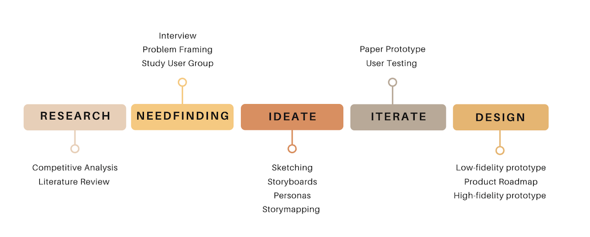
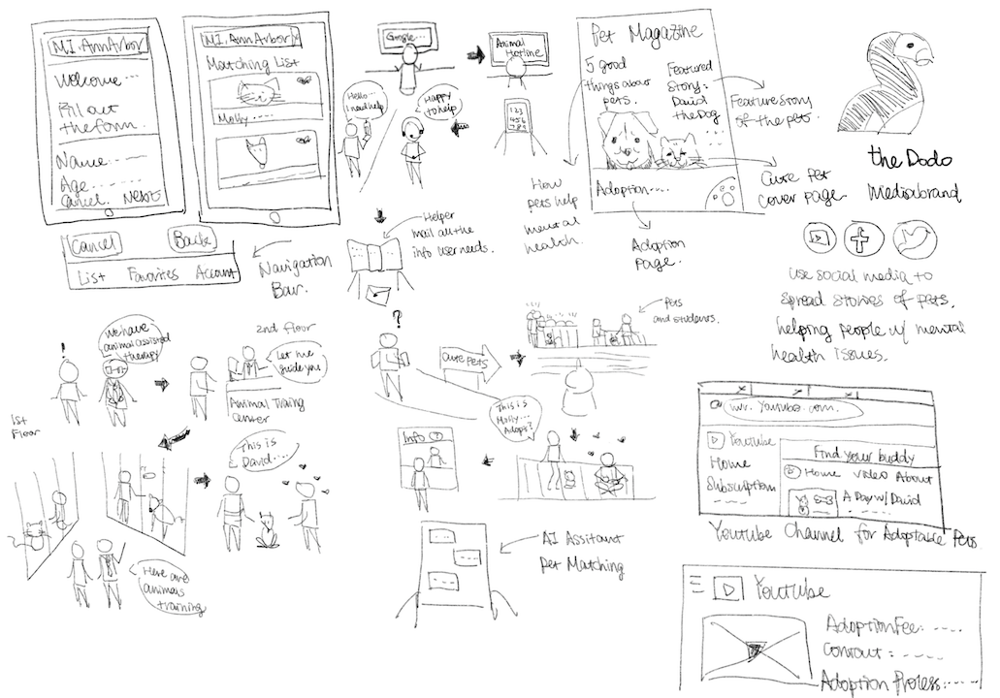

Overview
According to National Institute of Mental Health, it is estimated that 17.3 million adults in the United States are affected by depression and other mental health issues in 2017. For the past few years, the numbers are increasing, and the age affected is expanding. The conventional way of dealing with mental health problem can be divided into two categories in general: taking medications and meeting with therapists. Therapies also have different types: talk therapy, support group, brain stimulation and so on. However, animal-assisted therapy is usually not considered as a medical therapy despite there are findings shown in the past literature review and scholarly papers that it is effective and the positive impact is long-lasting.
Design Process
Research
Based the research I conducted, there is no explicit solution to the problem purposed, but similar soluitons exist.
- The app adopets helps users to match with pets availble locally, however it doesn't fulfill the needs of people with mental health issues.
- Mayo clinichas great animal-assisted therapy session, but the session is only accessible to people who are hospitalized.
- Youper is an application that people with special mental needs can chat with an AI assistant however it lacks real connection with people.
- Happy Tails Rescue is an organization where pets that have emotional support training are available to people who have Post-Traumatic Stress Disorder (PTSD).
Needfinding
After doing some background research on the subject, I found out that mental health concern not only affects patients but also their loved ones. Therefore, I set up two groups of target users. One user group was people who has family memebers suffer from mental health issues, another user group was the patients themselves.
After conducting 5 interviews, the main findings are:
- Two interviewees said that pets made them feel less lonely and less woried about other things in their minds.
- The interviewees who have gone through the adoption process said the adoption process took a lot of time. The female interviewee whose husband has depression said that the process was especially difficult for her because her husband didn't want to go outside so she didn't know if the pet was good match for him.
- I was curious if the pets added extra stress or burden for people who had stress/anxiety/depression, but I was surprised to see that the interviewees were happy about their decision of adopting a pet. Taking care of pets is not an issue.
Ideate
Brainstroming
Based on the user research, I generated eight unique sketches to address the goal of making adoption process easier.
Storyboarding
After brainstorming different potential solutions, I generated different storybaords to see from the user's perspective of the solutions. Among all the storybaords I created, I chose to create a mobile application that can not only help users to find the matched pet but also bring the pets to users' preferred location to save their time.